git-flow + github
Check this good cheatsheet.
Install and setup the project
Get the code from this github repository :
- The source code for this project is used to create a clean, ready-to-use docker image.
# download the code
$ git clone \
--depth 1 \
https://github.com/jeromedecoster/note-git-flow.git \
/tmp/note
# cd
$ cd /tmp/note
# docker pull ubuntu + create settings.sh
$ make setup
After the setup, we need to define the variables inside the settings.sh file :
GIT_CONFIG_EMAIL=
GIT_CONFIG_NAME=
GITHUB_LOGIN=
GITHUB_PASSWORD=
Now we can build the flow docker image with the init.sh and install.sh scripts :
- Install git, git-flow, curl, zsh, nano, oh-my-zsh
- Configure git and ~/.netrc
# build the image
$ make init
Now we can create a github repository :
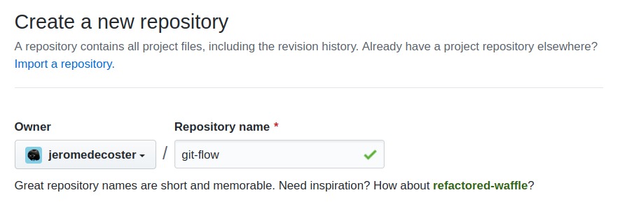
Note the HTTPS URL :
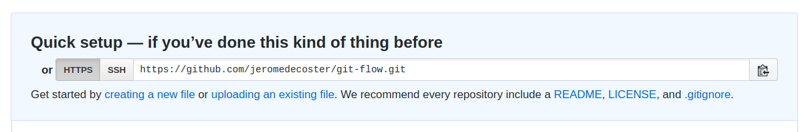
Test git-flow
git-flow in 7 points :
- The master branch is the stable branch, ready to be pushed in production.
- The develop branch is the branch where we work. With the latest features.
- When we want to add a new feature to the development branch, we create a feature.
- Each added feature is isolated in a specific branch. Once the development of a functionality is finished, we will merge it in the develop branch.
- When the work on the develop branch is finished and valid we will create a release.
- A release is also a specific branch.
- when we decide to finish the release, it will be merged into the master branch.
In reality, it is a little more complicated, but the main idea is well summarized in these 7 points. Read the full explanations.

Let’s start our docker image :
# run the image
$ docker run \
--rm \
--interactive \
--tty \
flow
# you should see the following prompt
➜ /tmp
Let’s clone the repository we just created on github :
# replace with your URL
➜ /tmp git clone https://github.com/jeromedecoster/git-flow.git
# cd
➜ /tmp cd git-flow
➜ git-flow git:(master)
Let’s initialize git flow :
# initialize git flow
➜ git-flow git:(master) git flow init --defaults
# we are now on the `develop` branch
➜ git-flow git:(develop)
Let’s create a feature :
# create a feature
➜ git-flow git:(develop) git flow feature start feature-1
# we are now on the `feature/feature-1` branch
➜ git-flow git:(feature/feature-1)
Let’s create and commit some changes :
➜ git-flow git:(feature/feature-1) echo '## feature-1\n' >> readme.md
➜ git-flow git:(feature/feature-1) ✗ git add --all
➜ git-flow git:(feature/feature-1) ✗ git commit --message feature-1
If our work is completed, we can finish the feature :
# finish the feature
➜ git-flow git:(feature/feature-1) git flow feature finish feature-1
# we are back on the `develop` branch
➜ git-flow git:(develop)
# the `feature/feature-1` branch was deleted
➜ git-flow git:(develop) git branch
* develop
master
Let’s push the develop branch on github :
- We use the
-u(same as--set-upstream) option because it’s the first time we push this branch.
# push to github
➜ git-flow git:(develop) git push -u origin develop
It’s online :
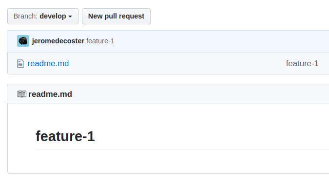
Let’s create and commit another feature :
# create a feature
➜ git-flow git:(develop) git flow feature start feature-2
# some changes
➜ git-flow git:(feature/feature-2) echo '## feature-2\n' >> readme.md
➜ git-flow git:(feature/feature-2) ✗ git add --all
➜ git-flow git:(feature/feature-2) ✗ git commit --message feature-2
# finish the feature
➜ git-flow git:(feature/feature-2) git flow feature finish feature-2
Now we can push the develop branch on github with this shorten command :
➜ git-flow git:(develop) git push
It’s online :
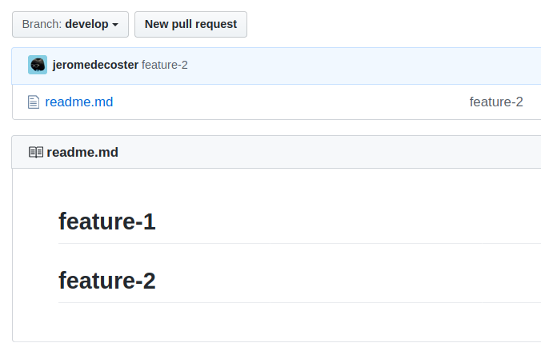
This project is now ready to be shipped, we will create a release :
# create a release
➜ git-flow git:(develop) git flow release start v1.0.0
# we are on the `release/v1.0.0` branch
➜ git-flow git:(release/v1.0.0)
Let’s create and commit the changelog, then finish the release :
# some changes
➜ git-flow git:(release/v1.0.0) echo '# v1.0.0\n' >> changelog.md
➜ git-flow git:(release/v1.0.0) git add --all
➜ git-flow git:(release/v1.0.0) git commit --message v1.0.0
# finish the feature
➜ git-flow git:(release/v1.0.0) git flow release finish v1.0.0
Now we have 3 commit messages to write :
- For the first message, I leave the default message :
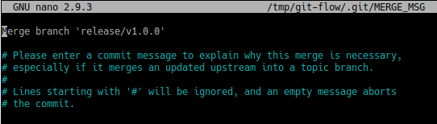
- For the second message, I write the current message :
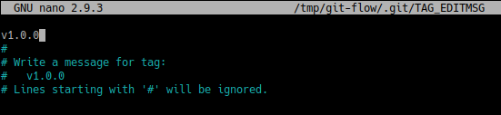
- For the third message, I leave the default message :
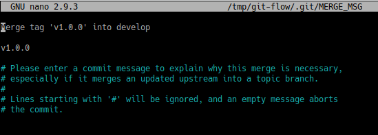
The release is finished, this means :
- We are now back on the develop branch.
- The master branch received the previous features.
- We can push the master branch to github. We push with the long command because it’s the first time.
# we are back on the `develop` branch
➜ git-flow git:(develop)
# push to github (with -u)
➜ git-flow git:(develop) git push -u origin master
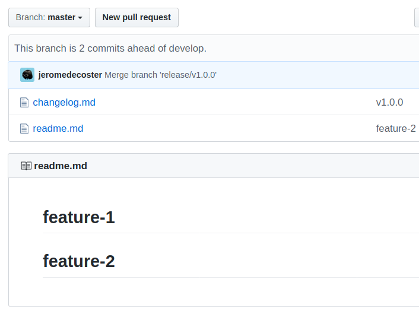
Unfortunately the tag was not put on the github repository :
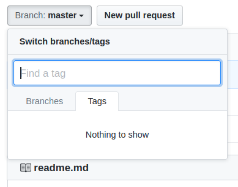
We need to execute this command :
# push all local tags
➜ git-flow git:(develop) git push --tags
This is now done :
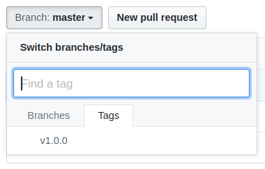
Let’s check the logs :
➜ git-flow git:(develop) git log --graph --oneline
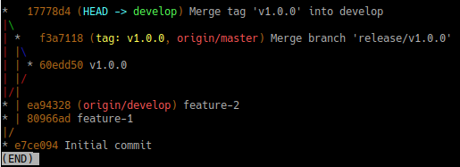
A simplified view :
➜ git-flow git:(develop) git log --graph --oneline --first-parent develop
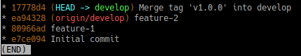